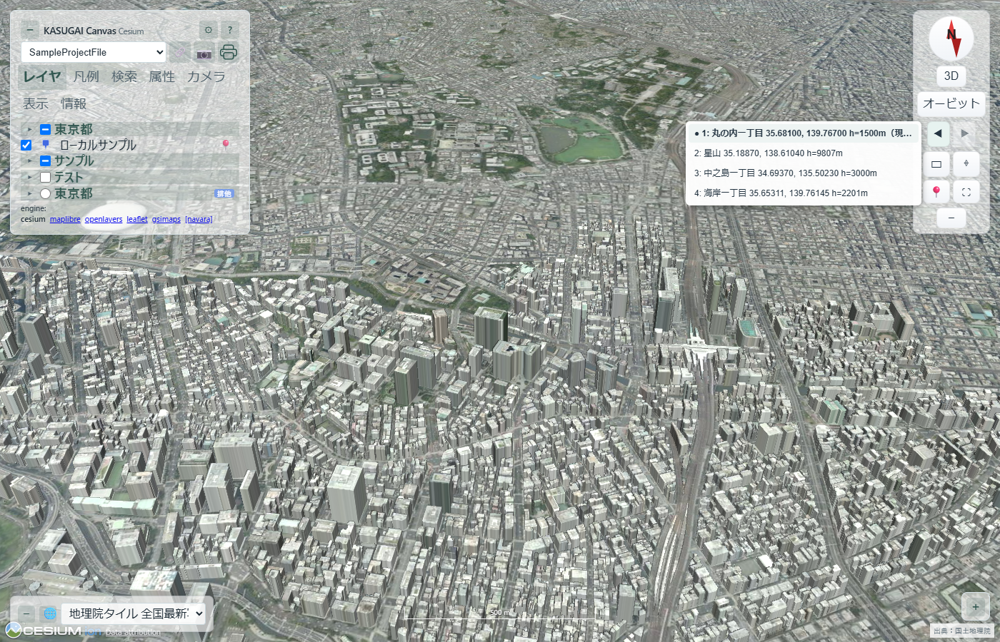

ナビゲーションツールバー（画面右下）の「◀/▶」ボタンで、表示位置の履歴を行き来できます。
使い方
📜 表示履歴（◀ ▶）
カメラ移動をスタックとして履歴化し、戻る/進むボタンで移動履歴を行き来します。カメラ操作のたびに履歴が積まれるため、どの位置からでも任意の過去表示へ戻れます。

AI の undoView ツールで「一つ前の表示に戻す」指示も履歴スタックで実現します（5-3 AI ツール仕様）。エンジン切替時も履歴は引き継がれます（1-10 マルチエンジン）。
設定方法
このツールは .kasc の設定行を持ちません（UI 操作のみです）。関連するレイヤー設定は 6-2 インスペクター を参照してください。